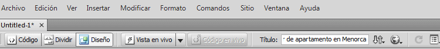

Guía de aprendizaje
Dreamweaver CS4
Tutorial 1. Crear una página web para alquilar un apartamento
Desarrollo del tutorial: paso 6 de 17
Vamos a acabar la preparación de nuestra página poniéndole el título a la misma. Esto lo podemos realizar en tres sitios diferentes:
- Directamente en el código, modificando el texto Documento sin título. Vimos cómo acceder al código de la página en un paso anterior.
- En el menú, en Modificar-Propiedades de la página, en la categoría Título-Codificación tenemos un campo llamado Título donde podemos modificar ese dato.
- Finalmente, en la barra de herramientas que aparece bajo el menú, tenemos también un cuadro de texto donde podemos modificar el título de nuestra página. Vamos a hacerlo aquí; vamos a poner "Alquiler de apartamento en Menorca".
Ahora ya estamos a punto de poder incluir contenido en nuestra página. Nos queda tan solo grabar la página con el nombre index.html.
¿Por qué index.html? index.html es el archivo que la mayoría de servidores carga por defecto cuando se accede a un sitio web.
